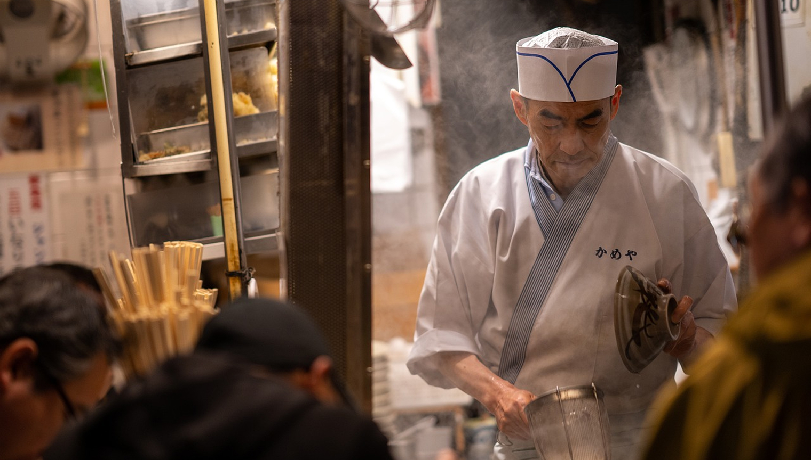
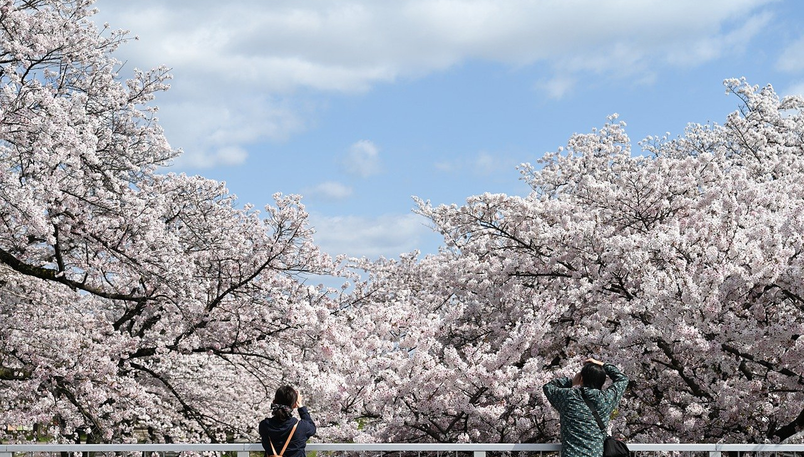
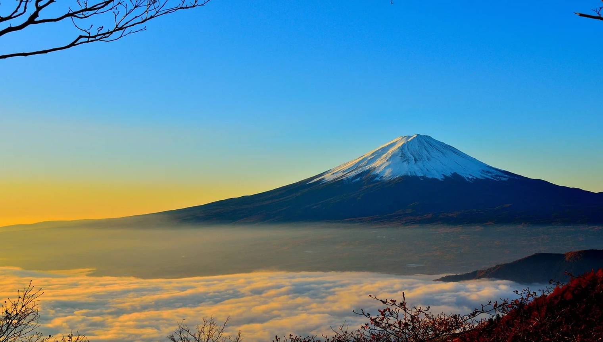

生年月日: 1998.2.26
出身：アメリカ
趣味：カメラ撮影 / 絵を描くこと
好きな言葉：Freedom of choice for everyone.
1998年02月：アメリカのニューヨーク州に産まれる
2004年04月：ニューヨーク州の小学校に入学
2008年12月：両親の仕事の関係で日本に移住
2016年04月：写真の専門学校に入学
2018年12月：Webデザインスクールに入学
東京のラーメン屋さん

埼玉の桜並木

富士山
